Ce projet construit un pipeline de données de bout en bout sur les 99 441 commandes du dataset public de la marketplace brésilienne Olist (2016-2018). Les fichiers CSV sont déposés dans Azure Data Lake Storage Gen2, puis Azure Data Factory orchestre un job Azure Databricks serverless qui produit trois couches Delta Lake (Bronze, Silver, Gold) gouvernées par Unity Catalog. La couche Gold est un schéma en étoile exploité dans un rapport Power BI de quatre pages. Un modèle de prédiction des retards de livraison est entraîné, comparé dans MLflow, enregistré dans le registre Unity Catalog et appliqué en batch par le pipeline.
La question métier qui guide le projet est la suivante : les retards de livraison détruisent-ils la satisfaction client, où se produisent-ils, et peut-on les prédire dès la commande ?
Les retards sont fortement concentrés dans le temps (19 % en mars 2018) et dans l'espace (21 % dans l'Alagoas contre 3 % en Amazonas). Le modèle retenu bat une règle simple sur la période de test (PR-AUC 0,056 contre 0,050), mais de peu : les retards viennent surtout de chocs de période que les informations disponibles au moment de la commande ne voient pas. Ce résultat est présenté tel quel, avec le protocole qui l'a produit.
Côté ingénierie, la logique vit dans un paquet Python testé en local (29 tests, Docker aligné sur Databricks), les notebooks ne font que l'appeler, et le même code a tourné sur Databricks sans modification. Les identités managées remplacent les clés, onze décisions d'architecture sont documentées, et une intégration continue GitHub Actions vérifie chaque modification. Le projet a coûté 11,14 USD sur un compte Azure for Students, dont les deux tiers pour une ressource réseau que le calcul serverless n'utilisait pas : c'est l'un des enseignements du rapport.
Le projet a un double objectif. D'un côté, démontrer les compétences recherchées dans les offres data et cloud : ingestion et orchestration sur Azure, transformation Spark sur Databricks, modélisation dimensionnelle, Power BI et DAX, machine learning industrialisé, maîtrise des coûts et de la sécurité. De l'autre, répondre à une vraie question métier avec des chiffres vérifiables, plutôt que d'empiler des outils.
Ce que le projet doit prouver :
Le dataset Kaggle « Brazilian E-Commerce Public Dataset by Olist » décrit environ 100 000 commandes passées entre fin 2016 et fin 2018. Les neuf fichiers sont présents :
| Fichier | Lignes | Clé | Contenu |
|---|---|---|---|
| orders | 99 441 | order_id | statut et cinq dates (achat, approbation, remise au transporteur, livraison, livraison estimée) |
| order_items | 112 650 | order_id + order_item_id | articles, prix, fret, vendeur |
| order_payments | 103 886 | order_id + payment_sequential | type de paiement, échéances, montant |
| order_reviews | 99 224 | review_id + order_id | note de 1 à 5, commentaire en portugais |
| customers | 99 441 | customer_id | identifiant client réel, ville, état |
| products | 32 951 | product_id | catégorie, poids, dimensions |
| sellers | 3 095 | seller_id | ville, état |
| geolocation | 1 000 163 | zip_code_prefix (non unique) | coordonnées par préfixe postal |
| category_translation | 71 | catégorie | traduction portugais → anglais |
Dans le périmètre : lakehouse en couches Bronze, Silver et Gold au format Delta ; orchestration par Data Factory ; transformations PySpark sur Databricks ; schéma en étoile et rapport Power BI ; modèle de prédiction des retards suivi dans MLflow, enregistré et appliqué en batch ; tests et contrôles de qualité ; intégration continue.
Hors périmètre, assumé : endpoint de prédiction temps réel (coût permanent, inutile pour un score quotidien), streaming, IA générative, haute disponibilité et réseau privé. Ces points sont discutés au chapitre 9 comme évolutions de production.
Le travail suit neuf phases, chacune avec une « définition de fini » vérifiée par une commande ou un test plutôt qu'à l'œil. La règle centrale est de ne rien créer dans le cloud avant que le pipeline marche en local : les phases 0 à 3 (exploration, Bronze, Silver, Gold, maquette Power BI) tournent entièrement dans Docker, à coût nul. Le cloud n'exécute ensuite que du code déjà testé. Chaque choix structurant est consigné dans un journal de décisions (onze ADR, annexe B), et chaque chiffre de ce rapport vient d'une exécution réelle.
| Phase | Contenu | Jour |
|---|---|---|
| 0 | Cadrage, dépôt, environnement Docker, comptes et quotas Azure | Jour 1 |
| 1 à 3 | Exploration, Bronze, Silver, Gold et maquette Power BI en local | Jour 1 |
| 4 | Stockage ADLS, Databricks, Unity Catalog, premier job serverless | Jour 1 |
| 5 | Orchestration Data Factory | Jours 1 et 6 |
| 6 | Power BI connecté à Databricks, quatre pages | Jours 6 et 7 |
| 7 | Machine learning et MLflow | Jour 7 |
| 8 | Intégration continue | Jour 7 |
| 9 | Vitrine, captures, nettoyage | Jours 7 et 8 |
Les jours 2 à 5 n'ont pas été travaillés ; seule la passerelle réseau du workspace Databricks a été facturée (chapitre 8).
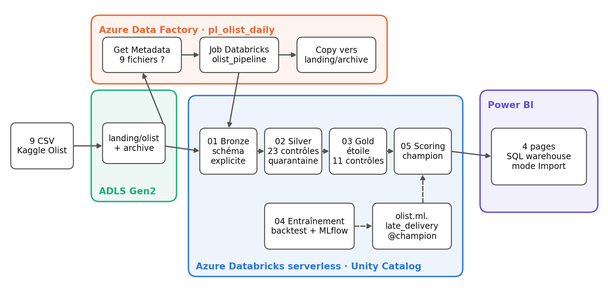
landing du compte ADLS Gen2, exposé à Databricks comme un volume Unity Catalog.pl_olist_daily vérifie que les neuf fichiers sont là, lance le job Databricks olist_pipeline, puis archive les CSV dans un dossier daté.Le compte Azure for Students n'autorise que cinq régions. Les deux qui proposent Databricks (Suisse Nord et Norvège Est) n'offrent aucune taille de machine virtuelle utilisable : toutes sont marquées NotAvailableForSubscription, ou dépassent le quota de 6 vCPU. Les quotas affichés en phase 0 ne garantissaient donc rien : un quota n'est pas une autorisation. Les régions qui ont des machines utilisables ne proposent pas Databricks.
Décision (ADR-007) : un workspace Databricks Premium en Suisse Nord, avec calcul serverless uniquement, dont les machines tournent chez Databricks et non dans l'abonnement. Il n'y a donc pas de cluster : le pipeline tourne en job serverless, Data Factory lance ce job avec l'activité Databricks Job, et Power BI passe par un SQL warehouse serverless. La règle « jamais de serverless » prévue au départ, motivée par un projet comparable qui avait consommé 35 USD en trois jours de développement interactif, est devenue « jamais de développement interactif sur serverless ».
Options écartées : demander au support de débloquer une taille de VM (lent et incertain sans plan de support), ou quitter Azure Databricks, ce qui aurait fait perdre la compétence visée.
Le poste de travail Windows avait Python 3.13 et Java 8 ; le runtime Databricks visé (18 LTS ML) utilise Python 3.12, Java 21, Spark 4.1 et Delta 4.2. Plutôt que d'installer et maintenir ces versions sur Windows, le projet utilise une image Docker (python:3.12-slim, OpenJDK 21, pyspark 4.1.1, delta-spark 4.2.0). Les bibliothèques de machine learning sont épinglées sur l'environnement serverless version 6 où les jobs s'exécutent (pandas 2.3.3, scikit-learn 1.7.2, LightGBM 4.6.0, mlflow-skinny 3.12.0). La même image sert à l'intégration continue.
Le bénéfice s'est vérifié : le code testé en local a tourné sur Databricks sans aucune modification, avec les mêmes chiffres à l'unité près.
Toute la logique vit dans le paquet src/olist (un module par couche, plus ml/), sous forme de fonctions pures testables avec de petits DataFrames. Les notebooks Databricks ne contiennent que trois lignes utiles : ajouter src au chemin, appeler la fonction, afficher le résultat. Un module config.py choisit l'emplacement des données : dossiers Delta locaux sous Docker, tables olist.<couche>.<table> sur Databricks.
landing, rôle Contributor sur le seul workspace Databricks. Aucune clé ni jeton n'est stocké dans le pipeline..env ignoré, un modèle sans secret est versionné, et l'historique a été vérifié avant publication.Avant d'écrire une seule règle de nettoyage, un script d'exploration a mesuré les défauts sur les données brutes, et les comptages ont été recoupés indépendamment avec le module csv de Python. Les constats principaux (ADR-004) :
| Constat | Valeur | Conséquence |
|---|---|---|
| Commandes sans date de livraison | 2 965 | statut de livraison dédié ; exclues de la cible ML |
| Produits sans catégorie | 610 | catégorie unknown |
| Catégories absentes de la traduction | 2 | traduction manuelle |
review_id rattachés à plusieurs commandes | 789 | la vraie clé est (review_id, order_id) |
| Commandes avec plusieurs avis | 547 | garder l'avis le plus récent |
| Points de géolocalisation pour 19 015 préfixes | 1 000 163 | médiane des coordonnées par préfixe |
| Clients techniques / clients réels | 99 441 / 96 096 | dimension client sur l'identifiant réel |
| Commandes payées sans aucun article | 775 | contrôle d'avertissement |
| Écart paiements − (prix + fret) | 165 318,88 BRL | à expliquer avant de modéliser |
Chaque CSV est lu avec un schéma explicite : codes postaux en texte pour garder les zéros initiaux, montants en DECIMAL(10,2), dates en horodatage avec une session forcée en UTC pour qu'aucune date ne se décale. La lecture est en mode FAILFAST : une valeur hors schéma arrête le run au lieu de devenir silencieusement null. Les commentaires d'avis contiennent des retours à la ligne, d'où une lecture multi-lignes : on obtient bien 99 224 avis, et non les 104 719 lignes physiques du fichier. Chaque table reçoit deux colonnes de traçabilité, _ingested_at et _source_file.
Un piège de test a été découvert en chemin : count() sur un CSV ne parse pas les colonnes, donc ne déclenche pas FAILFAST. Le test utilise collect() ; l'écriture Delta, elle, parse tout et protège bien l'ingestion.
Trois constats ont changé de sens après enquête, ce qui justifie la règle « enquêter avant d'écrire une règle » :
Les règles appliquées : un statut delivery_status fondé sur la présence de la date de livraison (et non sur le statut déclaratif, faux pour 8 commandes), un avis par commande, la catégorie unknown, la correction des noms de colonnes mal orthographiés de la source, et la géolocalisation agrégée par préfixe après mise en quarantaine des 42 points situés hors du Brésil.
Les lignes invalides ne sont jamais supprimées en silence : elles vont dans une table unique silver.quarantine qui garde la ligne complète en JSON et la règle violée.
À chaque run, 23 contrôles sont exécutés et historisés dans gold.dq_results. Les 16 contrôles de sévérité error (unicité et non-nullité des clés, intégrité référentielle, livraison après achat) font échouer le run ; les 7 contrôles warn comptent les défauts connus sans bloquer. Résultat du run de référence, identique en local et sur Databricks :
| Table | Contrôle | Sévérité | Lignes en défaut |
|---|---|---|---|
| orders, customers, products, sellers, order_items, order_payments, order_reviews, geolocation | 16 contrôles : clés uniques et non nulles, clés étrangères, un avis par commande, catégorie renseignée, livraison après achat | error | 0 (16 / 16 passent) |
| orders | payées sans article | warn | 775 |
| customers | préfixe sans géolocalisation | warn | 279 |
| orders | remise au transporteur avant achat | warn | 166 |
| orders | livrées avant approbation | warn | 61 |
| quarantine | lignes en quarantaine | warn | 42 |
| order_payments | paiements à zéro | warn | 9 |
| orders | sans paiement | warn | 1 |
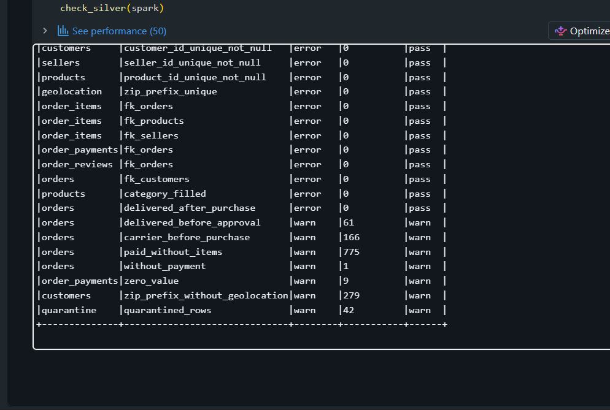
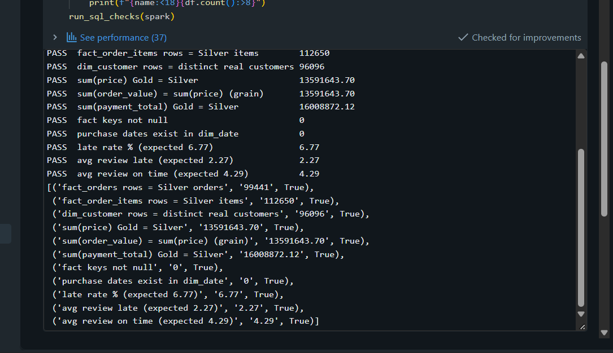
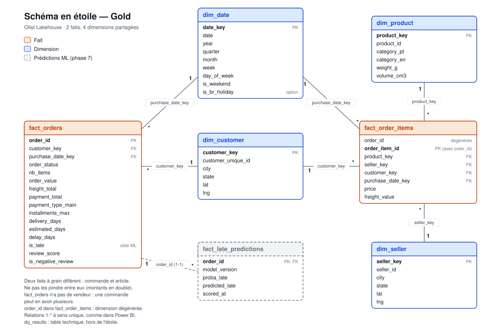
Les paiements et les avis existent au niveau de la commande, les prix au niveau de l'article. Les mélanger dans une seule table doublerait les montants des commandes à plusieurs articles. Le modèle Gold a donc deux faits : fact_orders (99 441 commandes, avec totaux, paiement principal, délais, retard et note) et fact_order_items (112 650 articles, avec prix et fret). Ils partagent quatre dimensions : client (96 096 clients réels, avec l'adresse de leur dernière commande), vendeur, produit et date (1 096 jours couvrant des années entières, pour l'intelligence temporelle de Power BI).
Les clés de substitution sont des rangs dans l'ordre de la clé naturelle : stables d'une reconstruction à l'autre sur les mêmes données. Il n'y a pas de membre « inconnu » dans les dimensions, parce que les contrôles Silver garantissent toutes les clés étrangères.
Onze contrôles SQL bloquants terminent la construction : volumes Gold égaux à Silver, sommes des prix et des paiements identiques entre couches et entre les deux faits, aucune clé de fait nulle, et non-régression de l'histoire (taux de retard et notes). Un contrôle en échec lève une exception et arrête le job.
Le chiffre de 8,1 % de retards circule dans la plupart des analyses de ce dataset. L'enquête montre qu'il est surestimé : la date de livraison estimée est toujours à minuit (aucune exception sur 99 441 commandes). Comparer des horodatages compte donc en retard toute commande livrée le jour promis après minuit, soit 1 292 commandes dont la note moyenne (4,03) est proche de celle des commandes à l'heure.
| Définition du retard | Taux de retard | Note en retard / à l'heure |
|---|---|---|
| Horodatage (chiffre courant) | 8,11 % | 2,57 / 4,29 |
| Jour (retenue, ADR-006) | 6,77 % | 2,27 / 4,29 |
La définition au jour près est utilisée partout : contrôles SQL, mesures DAX et cible du modèle. L'histoire en sort renforcée : l'écart de satisfaction est plus marqué (2,27 au lieu de 2,57).
order_id et doublerait les montants.TREATAS plutôt que d'activer un filtrage bidirectionnel :
Late Rate % (items) = CALCULATE ( [Late Rate %], TREATAS ( VALUES ( fact_order_items[order_id] ), fact_orders[order_id] ) )
powerbi/measures.dax, avec leurs valeurs attendues recalculées par Spark, pour qu'une erreur de filtre se voie immédiatement.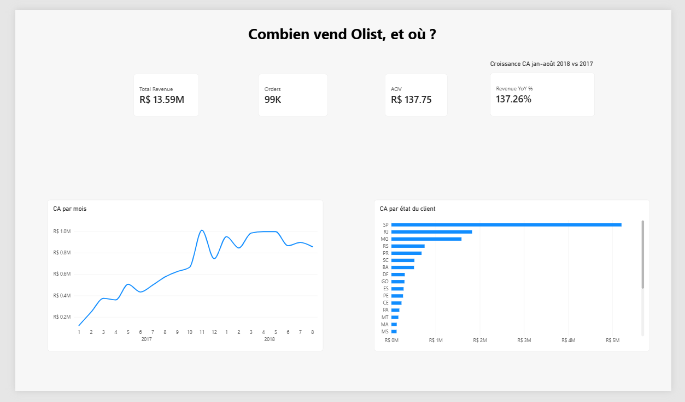
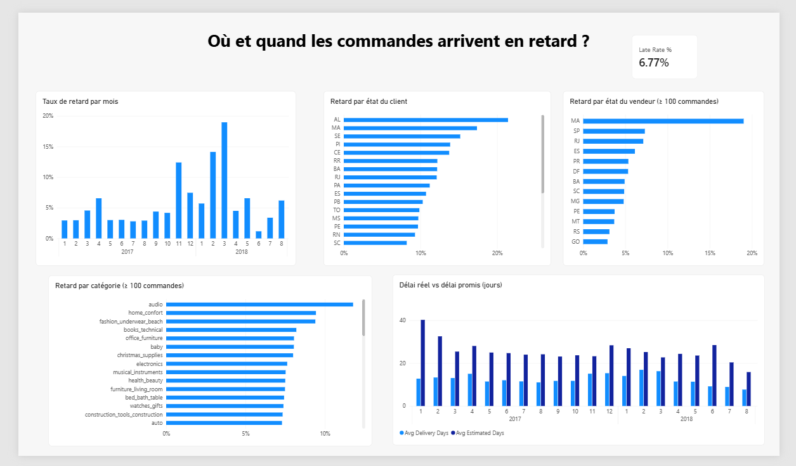
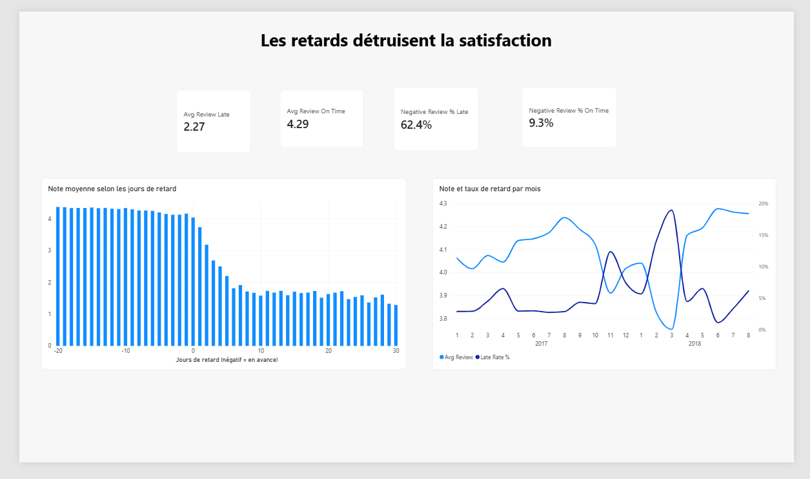
Réponse à la première partie de la question : oui, les retards détruisent la satisfaction. Une commande en retard reçoit en moyenne 2,27/5 contre 4,29/5, et 62 % d'avis négatifs (note ≤ 2) contre 9 %. La figure 7 montre une rupture nette : la note est stable tant que la commande est en avance, puis s'effondre dès le jour 1 de retard et se stabilise autour de 1,6 au-delà d'une semaine.
Un compte ADLS Gen2 (espace de noms hiérarchique activé) porte quatre conteneurs : landing, bronze, silver et gold. Dans Databricks, Unity Catalog relie ce stockage au catalogue olist sans clé :
bronze, silver et gold, dont l'emplacement géré est le conteneur du même nom, un schéma ml pour les modèles, et un volume externe landing.raw pointant sur le dossier des CSV.Tous ces objets ont été créés depuis Catalog Explorer, sans aucun calcul, donc à coût nul. Le repo GitHub est synchronisé dans Databricks par un Git folder, et le job olist_pipeline exécute les notebooks directement depuis ce dossier.
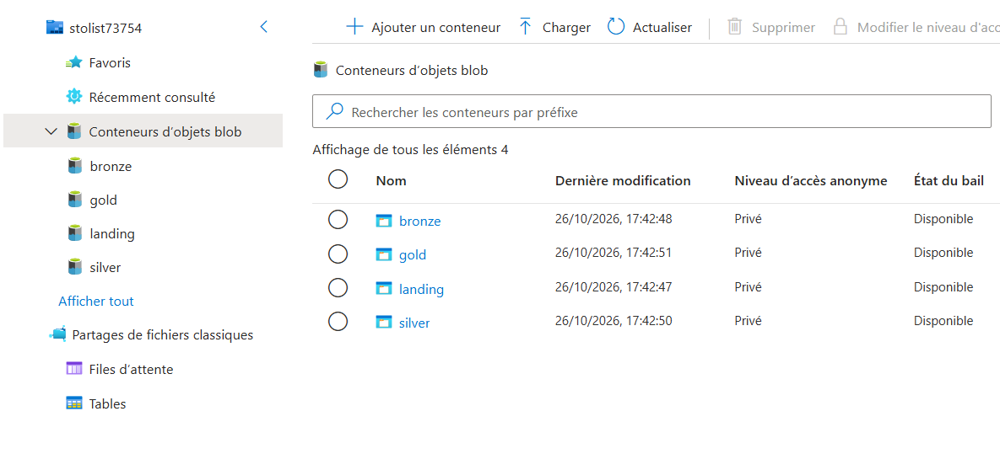
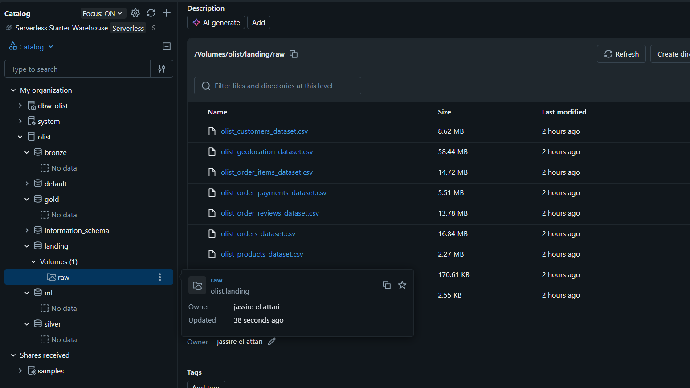
Premier run serverless (Jour 1) : réussi de bout en bout, avec les mêmes chiffres qu'en local à l'unité près. La tâche Bronze a pris 4 min 14 s contre environ 47 s en local : c'est le démarrage du serverless en mode standard (moins cher que le mode « performance optimized ») et l'écriture sur ADLS. Le run a coûté 0,22 USD.
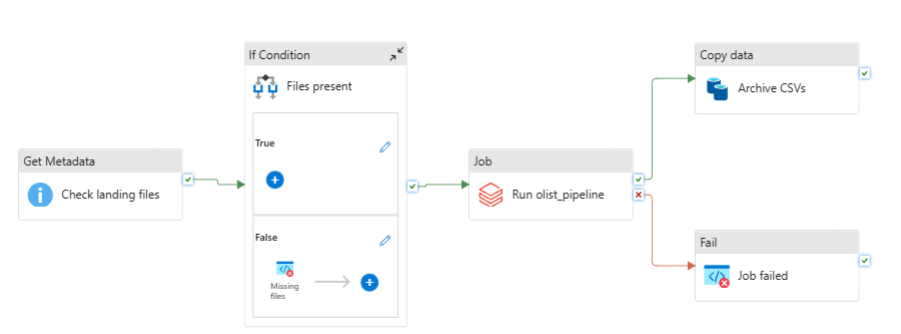
pl_olist_daily dans ADF Studio.landing/olist.expectedFileCount (9) ; sinon, une activité Fail arrête le run avec le nombre trouvé (MISSING_FILES).olist_pipeline en serverless, avec l'identité managée de la factory.landing/archive/<date>/, la date venant du paramètre runDate ou de l'heure prévue du déclencheur.JOB_FAILED). Sans elle, un chemin « en cas d'échec » qui réussit rendrait le pipeline vert alors que le job a échoué.Le plan initial prévoyait une copie de landing vers bronze dans Data Factory. Elle a été écartée : le notebook Bronze écrit déjà cette couche avec un schéma explicite et FAILFAST, et une copie aurait dupliqué la couche (ADR-008).
L'intégration Git de Data Factory versionne tout le JSON (pipeline, dataset, services liés, déclencheur) dans le dossier adf/ du dépôt : chaque enregistrement dans ADF Studio devient un commit. Le déclencheur quotidien est publié à l'état arrêté ; il transmet runDate à partir de l'heure prévue, pour qu'un run relancé plus tard garde sa date.
Deux constats de mise au point : le test de connexion du service lié Databricks échoue toujours en mode serverless (erreur 27001, « Cluster Serverless does not exist ») alors que le service lié fonctionne au run ; et un Debug avec l'activité Job désactivée permet de tester tout le reste du pipeline sans coût Databricks.
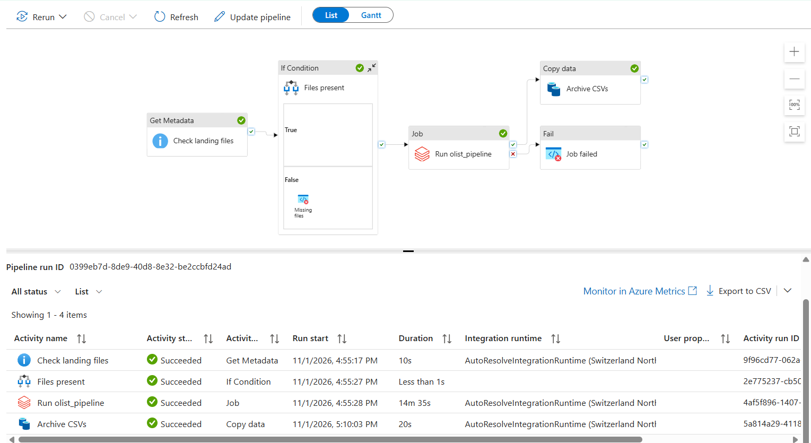
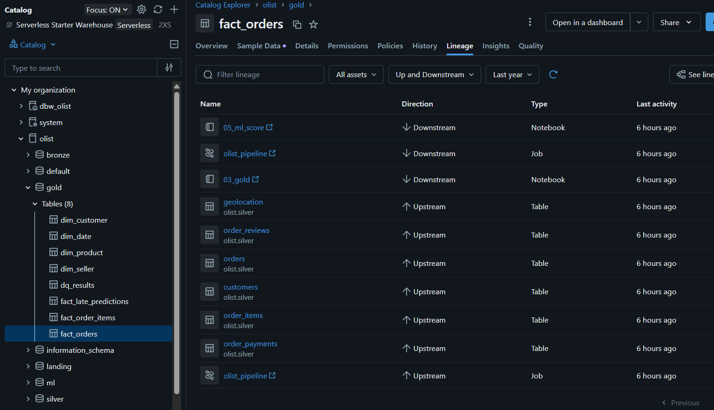
fact_orders : tables Silver en amont, notebooks Gold et scoring en aval.Unity Catalog reconstruit automatiquement le lineage : pour fact_orders, il montre les six tables Silver en amont et, en aval, le notebook de scoring qui la lit. C'est une documentation vivante du pipeline, sans effort supplémentaire.
Le rapport Power BI, construit d'abord sur des fichiers Parquet locaux, a été basculé vers Databricks en changeant seulement la source des six requêtes : relations, mesures et visuels ont été conservés, et les cartes affichaient toujours 6,77 % / 2,27 / 4,29. La connexion passe par le Serverless Starter Warehouse fourni avec le workspace, réduit à la taille 2X-Small avec arrêt après 5 minutes (un nouveau warehouse est par défaut en X-Large avec arrêt après 10 minutes). En mode Import, le warehouse ne tourne que le temps d'une actualisation.
La cible est is_late, la même définition au jour près que dans Power BI, lue directement dans gold.fact_orders. La population d'apprentissage est celle du taux de retard : les commandes livrées avec une date de livraison. Toutes les commandes sont scorées, y compris celles qui n'ont jamais été livrées.
La règle est non négociable : le modèle ne peut utiliser que ce qui est connu au moment où le client clique sur « acheter ».
Le point le plus subtil est l'historique. Une commande du même vendeur achetée plus tôt mais encore en route n'a pas d'issue connue au moment de l'achat : la compter serait une fuite. L'implémentation utilise une jointure temporelle (merge_asof, inégalité stricte) sur la date de livraison, et un test unitaire vérifie précisément ce cas.
Le découpage est temporel, jamais aléatoire : en production, on prédit toujours le futur à partir du passé. Les commandes achetées à partir du 1er juin 2018 forment le test, lu uniquement pour le rapport final (18 603 commandes, 3,6 % de retards). Le plan prévoyait une validation fixe sur avril-mai 2018. Elle s'est révélée inutilisable, parce que le taux de retard dérive fortement : 7,9 % sur l'entraînement (qui contient le pic de février-mars), 5,5 % en avril-mai, 3,6 % sur le test. Sur une seule fenêtre de deux mois, le classement des modèles s'inversait d'une variante à l'autre.
Le choix du modèle se fait donc par backtest glissant : pour chacun des huit mois d'octobre 2017 à mai 2018, un modèle entraîné sur tout le passé prédit ce mois. La métrique est le lift, la PR-AUC divisée par le taux de retard du mois, qui rend les mois comparables. Le champion est le modèle au meilleur lift moyen, et il doit battre la règle de base. Le modèle final suit la même recette (entraîné sur tout ce qui précède le test), et son seuil maximise le F1 sur les prédictions hors échantillon du backtest.
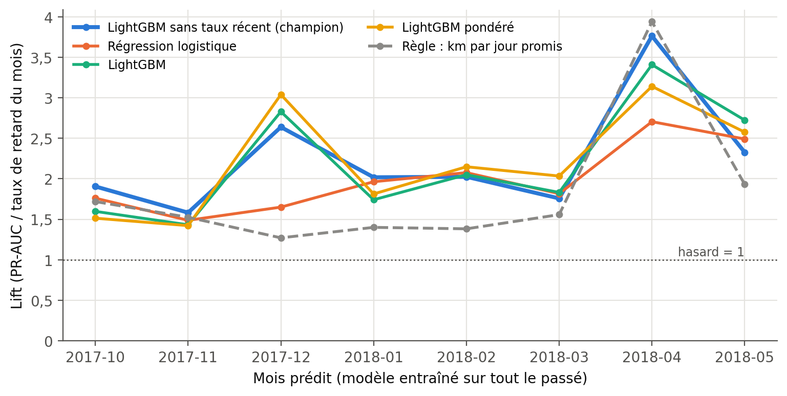
Le test a été regardé quatre fois pendant la mise au point, et ce rapport le dit :
Chaque changement a une raison de protocole : le mois mémorise un choc propre à 2018 qui ne se répète pas ; une fenêtre de validation unique est instable ; le modèle final doit suivre la recette qui a été évaluée. Le choix du champion n'utilise jamais le test. Le chiffre de test reste néanmoins légèrement optimiste, puisqu'il a été vu.
| Modèle | Lift backtest (mois battant la règle) | PR-AUC test | ROC-AUC test | Précision / rappel test |
|---|---|---|---|---|
| Règle : km par jour promis | 1,84 | 0,050 | 0,500 | 3,9 % / 40,5 % |
| Régression logistique (pondérée) | 1,99 (6/8) | 0,074 | 0,702 | 6,2 % / 70,7 % |
| LightGBM | 2,20 (5/8) | 0,038 | 0,495 | 4,0 % / 26,9 % |
| LightGBM pondéré | 2,21 (5/8) | 0,038 | 0,500 | 3,9 % / 18,2 % |
| LightGBM sans taux récent (champion) | 2,25 (7/8) | 0,056 | 0,538 | 4,9 % / 27,4 % |
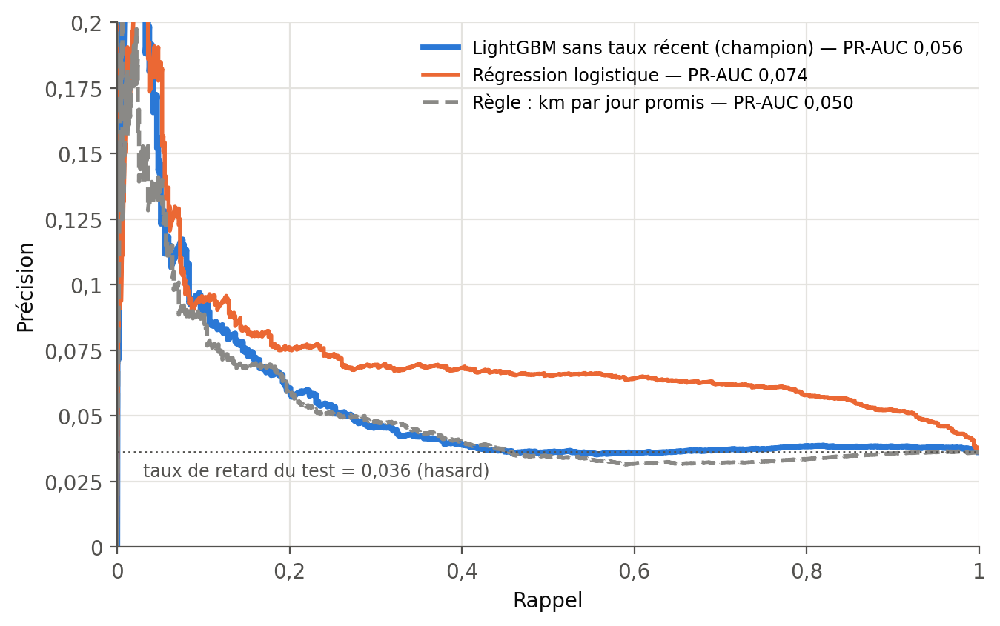
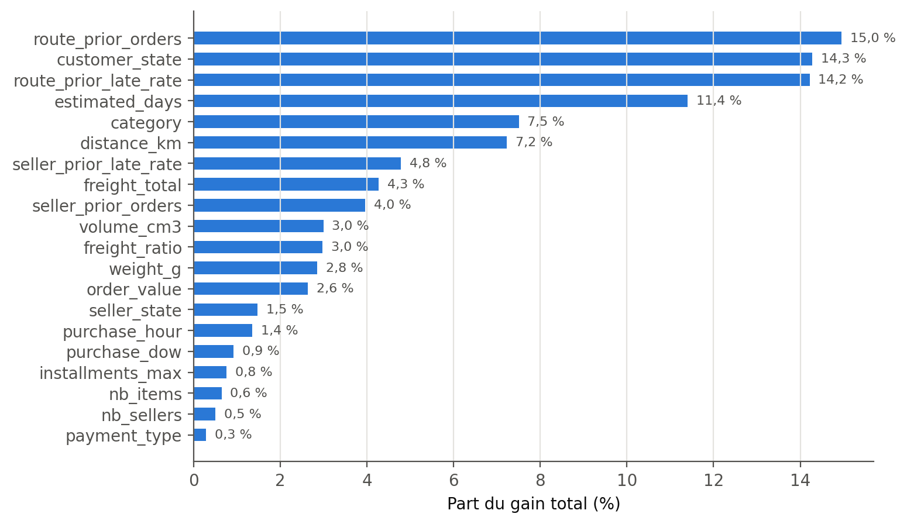
Les variables les plus utiles sont l'historique de la route (nombre de commandes livrées et part en retard, près de 30 % du gain à elles deux), l'état du client et le délai promis.
Lecture honnête. Le champion bat la règle de base sur le test (0,056 contre 0,050), mais de peu. Prédire un retard dès la commande reste difficile ici, parce que les retards viennent surtout de chocs de période (le pic de février-mars 2018) que les données de commande ne voient pas. La régression logistique généralise mieux sur une période calme : elle n'a pas été promue après coup, car ce serait choisir le modèle sur le test. En production, il faudrait des signaux externes (calendrier des fêtes, capacité des transporteurs, météo, grèves), un réentraînement mensuel et un suivi de la dérive.
Chaque entraînement crée cinq runs dans l'expérience MLflow /Shared/olist_late_delivery, avec les paramètres, les métriques du backtest et du test, et l'importance des variables. Le champion est enregistré dans Unity Catalog sous olist.ml.late_delivery, avec l'alias champion et son seuil en tag. Un garde-fou empêche l'enregistrement si aucun modèle ne bat la règle de base.
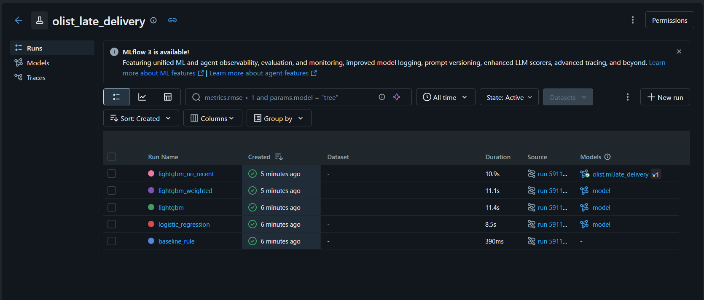
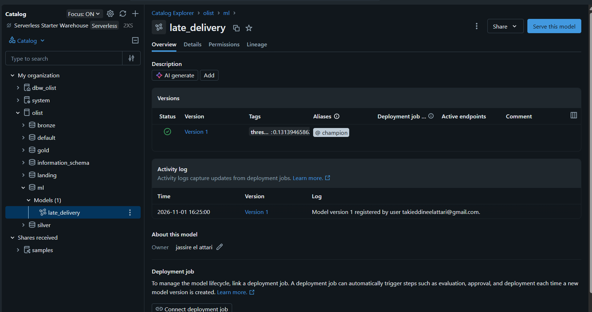
champion.L'entraînement sur Databricks a reproduit exactement le run local : même seuil (0,1314) et même répartition des prédictions. Le scoring est une tâche du job olist_pipeline, après Gold : il charge models:/olist.ml.late_delivery@champion et écrit gold.fact_late_predictions, une ligne par commande, avec une colonne dataset (fit, test ou unlabeled) qui indique sur quelles lignes juger le modèle. L'environnement serverless standard contient déjà scikit-learn et MLflow ; seule la dépendance lightgbm==4.6.0 est ajoutée aux tâches.
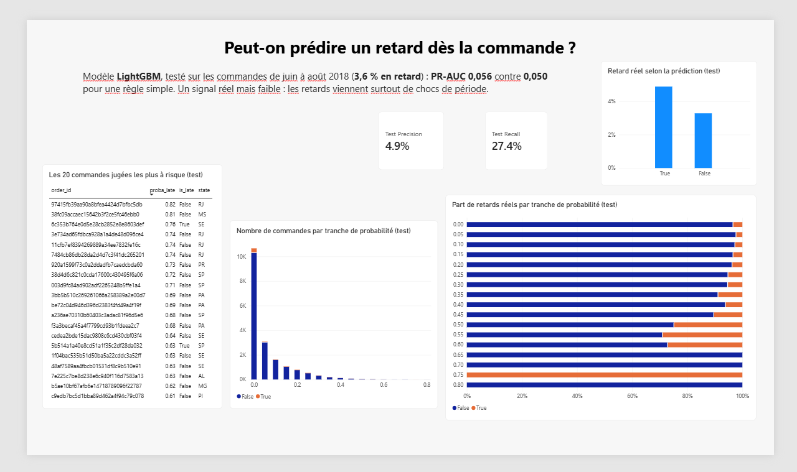
La page Power BI met le modèle à l'épreuve sur le seul test : 57 % des commandes ont une probabilité inférieure à 0,05, et seules 114 dépassent 0,5. Le modèle sait isoler un petit groupe plus risqué, mais ne peut pas prédire la plupart des retards : la réponse à la seconde partie de la question est donc « partiellement ».
Le projet compte 29 tests pytest, exécutés dans l'image Docker avec un Spark local et Delta :
fact_orders, client réel, calendrier, et un contrôle SQL en échec qui arrête bien le run ;Les tests qui lisent les données Kaggle (absentes du dépôt) se désactivent d'eux-mêmes : sans données, 19 tests passent et 10 sont ignorés ; avec les données, les 29 passent.
Un workflow GitHub Actions s'exécute à chaque push sur main et à chaque pull request : il construit l'image Docker du projet, lance le linter ruff puis les tests. Le premier run a été vert en 1 min 56 s. Les règles de ruff sont fixées explicitement dans pyproject.toml, pour qu'une mise à jour de l'outil ne change pas silencieusement ce que la CI vérifie.
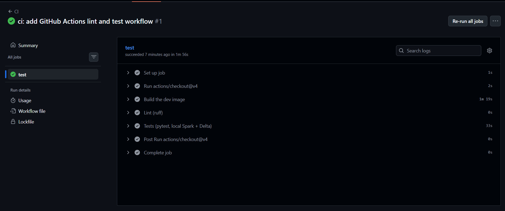
La CI ne déploie pas sur Databricks. Un déploiement par Databricks Asset Bundles demanderait un service principal fédéré en OIDC, ce qu'un compte Microsoft personnel sur Azure for Students a peu de chances de pouvoir créer ; les jobs se mettent à jour par le Git folder (ADR-011).
Onze décisions d'architecture (ADR) consignent le contexte, le choix, les options écartées et les conséquences de chaque arbitrage structurant (annexe B). Ce journal a servi pendant le projet, pour ne pas rediscuter une décision déjà prise, autant qu'il sert aujourd'hui à justifier les choix.
Le projet a coûté 11,14 USD sur les huit jours, pour un budget estimé de 15 à 35 USD et un crédit de 100 USD :
| Poste | Coût | Détail |
|---|---|---|
| NAT Gateway | 6,70 USD | facturée en continu du Jour 1 au Jour 8 |
| Calcul Databricks serverless | 3,58 USD | 0,22 (Jour 1, premier job) + 1,60 (Jour 6, run ADF et warehouse) + 1,76 (Jour 7, entraînement, run complet avec scoring, imports Power BI) |
| Virtual Network | 0,74 USD | probablement l'adresse IP publique de la NAT Gateway (déduit, non vérifié) |
| Data Factory | 0,09 USD | activités des runs et du Debug |
| Stockage et bande passante | 0,03 USD | CSV, tables Delta et archives |
| Total | 11,14 USD |
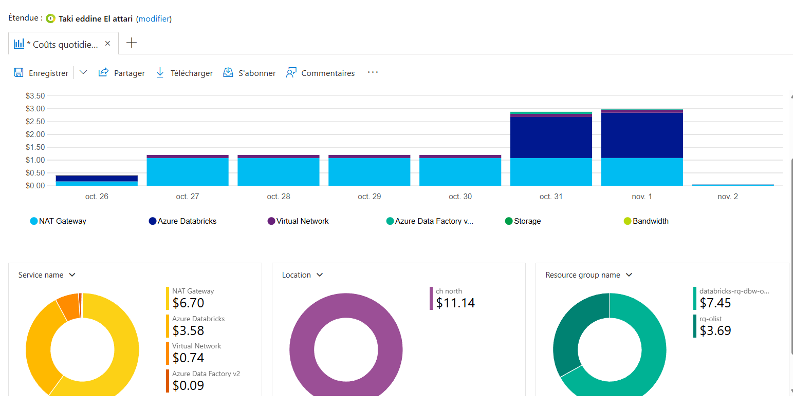
Les deux tiers de la facture viennent d'une ressource qui n'a jamais servi. Un workspace Databricks en mode Hybrid, créé avec le réseau par défaut, active la connectivité sécurisée sans IP publique, et Databricks crée alors une NAT Gateway dans un groupe de ressources managé et verrouillé. Elle est facturée à l'heure, même sans aucune exécution, pour un calcul classique que l'abonnement ne pouvait de toute façon pas lancer. Elle ne peut pas être désactivée : Microsoft ne permet de couper la connectivité sécurisée que temporairement.
Le coût a été détecté au Jour 6, au premier relevé détaillé, en voyant la facture monter les jours sans travail. La décision a été de garder le workspace jusqu'à la fin du projet plutôt que de tout reconstruire au milieu, puis de le supprimer. À refaire, il faudrait créer d'emblée un workspace Serverless, qui n'a pas de réseau classique.
En fin de projet, l'objectif était une consommation nulle tout en gardant visible la configuration réalisée. Le workspace Databricks a été supprimé, puis son groupe managé, qui n'avait pas disparu seul vingt minutes plus tard. Data Factory (pipeline et déclencheur arrêté), l'Access Connector et le compte de stockage ont été conservés, ses quatre conteneurs vidés : une factory sans exécution et un compte vide ne coûtent rien. Les données se reconstruisent à partir des CSV et du code. Le Jour 8 apparaît quasiment nul dans la facture.
| Phase | Définition de fini | Résultat |
|---|---|---|
| 1-2 | Bronze égal aux CSV ; Silver et contrôles sans échec bloquant | 9 tables = CSV ; 16/16 contrôles bloquants |
| 3 | Chiffres de l'histoire retrouvés ; relations Power BI propres | 6,77 % ; 2,27 / 4,29 ; 11/11 contrôles Gold |
| 4 | Tables visibles dans Unity Catalog ; mêmes chiffres qu'en local | atteint, coût du run noté (0,22 USD) |
| 5 | Run vert depuis ADF ; JSON dans Git ; déclencheur arrêté | atteint |
| 6 | Rapport, PDF et captures ; une question par page | 4 pages, PDF, captures |
| 7 | Modèle supérieur à la règle ; ≥ 3 modèles dans MLflow ; alias ; prédictions par ADF | atteint (0,056 contre 0,050), 5 modèles |
| 8 | CI verte | atteint, version sans déploiement |
| 9 | README lisible en deux minutes ; plus aucune ressource facturable | atteint |
MERGE) au lieu d'un remplacement complet, et partitionnement par date.| Jour | Travail |
|---|---|
| Jour 1 | Phase 0 : dépôt, image Docker, benchmark de neuf projets comparables, Azure CLI, budget, fournisseurs, quotas. Phases 1 à 3 en local : Bronze, Silver et contrôles, Gold et contrôles SQL, maquette Power BI. Phase 4 : constat « aucune VM utilisable », passage au serverless, ADLS, workspace, Unity Catalog, premier job réussi. Phase 5, bloc A : factory et rôles limités. |
| Jours 2 à 5 | Aucun travail ; seule la NAT Gateway est facturée. |
| Jour 6 | Relevé des coûts et découverte de la NAT Gateway. Phase 5, bloc B : intégration Git, services liés, pipeline, Debug, run vert. Phase 6, bloc A : warehouse, jeton, bascule du rapport vers Databricks. |
| Jour 7 | Phase 6, bloc B : pages Vue d'ensemble, Logistique, Satisfaction. Phase 7 : features, backtest, MLflow, entraînement sur Databricks, scoring dans le pipeline, page Prédictions. Phase 8 : intégration continue. Phase 9 : README et notes d'entretien. |
| Jour 8 | Captures finales, nettoyage Azure, coût total. |
| ADR | Décision |
|---|---|
| 001 | Environnement local Docker aligné sur Databricks Runtime 18 LTS ML. |
| 002 | Authentification de Data Factory vers Databricks : identité managée d'abord, jeton en secours (le secours n'a pas servi). |
| 003 | Suites du benchmark : l'option la moins risquée à chaque fois ; ajouts au cahier des charges. |
| 004 | Bronze à schéma explicite et FAILFAST ; défauts mesurés. |
| 005 | Règles Silver, quarantaine unique, 16 contrôles bloquants et 7 avertissements. |
| 006 | Retard au jour près (6,77 %) ; choix du schéma en étoile. |
| 007 | Aucune VM utilisable : workspace Premium, calcul serverless uniquement ; coût réel et NAT Gateway. |
| 008 | Orchestration Data Factory du job serverless ; pas de copie vers Bronze. |
| 009 | Power BI sur SQL warehouse, authentification par jeton. |
| 010 | Modèle de retard : features au moment de l'achat, backtest glissant, MLflow, scoring. |
| 011 | Intégration continue lint et tests, sans déploiement. |
Late Rate % =
DIVIDE (
CALCULATE ( [Orders], fact_orders[order_status] = "delivered", fact_orders[is_late] = TRUE () ),
CALCULATE ( [Orders], fact_orders[order_status] = "delivered", NOT ISBLANK ( fact_orders[is_late] ) )
)
hist = pd.merge_asof(
lines.sort_values("purchase_ts"), # one row per order and seller (or route)
events[[by, "delivered_ts", "prior_orders", "prior_late"]],
left_on="purchase_ts", right_on="delivered_ts", by=by,
direction="backward", allow_exact_matches=False, # only deliveries strictly before the purchase
)
-- 1. Volumes : Gold garde chaque ligne Silver -- 2. Montants : rien de perdu ni de doublé entre couches et entre les deux faits -- 3. Clés : chaque ligne de fait trouve ses dimensions -- 4. L'histoire (non-régression) : retard = livré après le jour promis -- Une ligne passed = false fait échouer le run.
En local, avec les neuf CSV Kaggle dans data/raw/ :
docker compose build docker compose run --rm dev pytest docker compose run --rm dev python -m olist.bronze docker compose run --rm dev python -m olist.silver docker compose run --rm dev python -m olist.gold docker compose run --rm dev python -m olist.ml.train docker compose run --rm dev python -m olist.ml.score
Sur Azure, le guide AZURE_SETUP.md du dépôt décrit chaque étape (stockage, Unity Catalog, jobs serverless, Data Factory, Power BI, nettoyage), y compris les pièges rencontrés.
| ADLS Gen2 | Azure Data Lake Storage, stockage objet avec espace de noms hiérarchique (vrais dossiers). |
| Bronze / Silver / Gold | Architecture « médaillon » : source typée, données nettoyées, données prêtes pour le métier. |
| Delta Lake | Format de table sur Parquet avec transactions ACID, historique et MERGE. |
| Unity Catalog | Gouvernance Databricks : catalogues, droits, accès au stockage, lineage, registre de modèles. |
| Serverless | Calcul Databricks géré par Databricks, facturé à l'usage, sans cluster dans l'abonnement. |
| Identité managée | Identité Azure attribuée à une ressource, qui reçoit des rôles sans clé ni mot de passe. |
| PR-AUC | Aire sous la courbe précision-rappel ; sa valeur de hasard est le taux de positifs. |
| Lift | PR-AUC divisée par le taux de positifs : 1 = hasard. |
| Backtest glissant | Évaluation répétée où chaque période est prédite par un modèle entraîné sur tout le passé. |
| Fuite de données | Utilisation, à l'entraînement, d'une information inconnue au moment de la prédiction. |